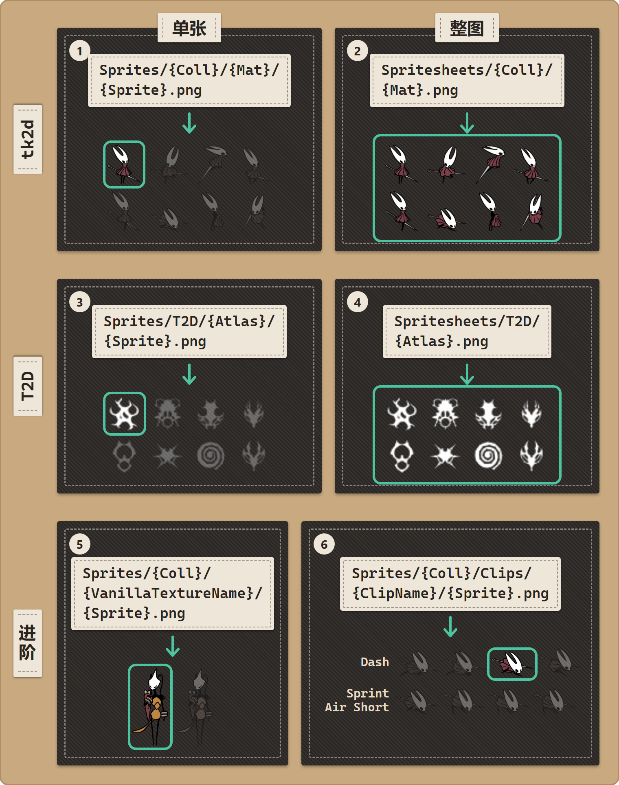

资源包目录结构
参考 · 面向创作者
每个文件该放在哪里，Stitchwork 才找得到。
玩家可以跳过这一页，这些事资源包作者会处理好。
浏览目录结构
使用下面的资源浏览器：在顶部选一种结构，点击文件夹或文件，就能看到它的用途、一条示例路径，以及讲解它的页面。用到的都是丝之歌里真实的资源名称。
基本结构
资源包就是一个文件夹。资源包文件夹里有一个 Stitchwork/ 文件夹，你要替换的每一类资源，在 Stitchwork/ 里各占一个子文件夹：
my-cool-pack\
manifest.json ← required for Thunderstore distribution
README.md ← what your pack does; required for Thunderstore
icon.png ← Thunderstore display icon, exactly 256×256
Stitchwork\ ← identifier for the plugin
Sprites\ ← image replacements (most common)
Spritesheets\ ← whole-atlas image replacements (advanced)
Sounds\ ← audio: SFX and music
Videos\ ← cutscene replacements
Text\ ← dialogue, item names, UI text
Fonts\ ← fonts: fill missing characters, or replace one language's font
Recolor\ ← scene tint and light rules, Hornet's colors, slash and poison colors
pack.json ← optional: pack name/author/version/description (shown in the Pack Manager)
cover.png ← optional: the image on your pack's card in the Pack Manager
conditions.json ← optional preview: names and orders the rule sets
Sets\ ← optional preview: parts of the pack that switch on by conditions三个 Thunderstore 文件放在 Stitchwork\ 旁边，而不是放在它里面。只给自己用的资源包，只需要 Stitchwork\ 文件夹。
不用把每个文件夹都建出来，只建你真正要替换的资源类型对应的文件夹就行。比如只改音乐的资源包，有一个 Sounds/ 文件夹就够了，其余的都可以省掉。
给资源包命名——pack.json
可选，但建议附上。它决定你的资源包在资源包管理器卡片上显示的名称；发布新版本时，还能保住每位玩家给你的资源包做的设置。它是一个小小的 JSON 文件，放在资源包的 Stitchwork/ 文件夹里，和各个资源文件夹并列——放在全局资源包文件夹里也好，通过 Thunderstore 安装也好，都是这样：
{
"name": "Crystal Hornet",
"author": "You",
"version": "1.0.0",
"description": "A crystalline reskin of Hornet.",
"cover": "art/banner.png"
}五个字段全都是可选的；没有 pack.json（或者里面没有 name）时，资源包管理器会显示文件夹名。名称形如 Author-Pack_Name 的文件夹，会显示为“Pack Name”，作者为 Author。开发中心总览面板（按 2）里的新建资源包按钮，会帮你建好资源包文件夹和 pack.json（见 B1）。卡片上先显示名称，然后是“作者：作者名 · v版本号”，最后是简介。cover 指定卡片的图片：见资源包封面。别把 pack.json 和 manifest.json 搞混——那是 Thunderstore 用的打包文件（商店页面信息、依赖项），Stitchwork 本身从来不读它。详见发布你的资源包。子集（Sets\ 和 conditions.json）还是预览功能：请看条件激活一页里的子集：资源包自带的条件（预览）。
你的文件放在哪里
你的文件有三个位置可以放：
方式 A：做成 Thunderstore 包（发布时推荐）
BepInEx\plugins\{AuthorName-PackName}\Stitchwork\
Sprites\
Sounds\
...注意插件文件夹里的 Stitchwork\ 子文件夹。Stitchwork 找的就是这个文件夹名。它也能读取 Patchwork/ 文件夹，所以为 Patchwork 制作的资源包不用修改就能载入。
Thunderstore 要求的就是这种格式。你的资源包以 BepInEx/plugins/ 下的一个文件夹发布，Stitchwork 会自动发现它。
方式 B：放在全局资源包文件夹里（自己的资源包推荐这样放）
<Game folder>\Packs\{PackName}\Stitchwork\
Sprites\
Sounds\
...结构完全一样，只是放在游戏文件夹里，而不是管理器档案里。每个管理器档案都能看到这个文件夹，模组管理器更新时也永远不会动它。每个资源包的开关状态，仍然按管理器档案分别保存。
方式 C：工作区文件夹
工作区文件夹默认是 <Game folder>\Stitchwork\。把 Sprites\ 这样的资源文件夹直接放进去，外面不用再套一层资源包文件夹。它用来试做修改，而不是用来分享。这些文件不是资源包，所以资源包管理器没法关掉它们。对大多数资源类型来说，资源包里的文件优先于工作区文件夹里的同名文件（见优先级与冲突）。模组管理器更新时，同样不会动这个文件夹。
精灵图：放在哪里
精灵图路径有专门的参考页——精灵图路径速查：决定路径的两个问题、全部六种布局和示例，还有大尺寸美术用的锚点标签。概览如下：
| 单张 | 整图 | |
|---|---|---|
| tk2d | Sprites/ | Spritesheets/ |
| T2D | Sprites/ | Spritesheets/ |
新美术请用单张文件；已经完成的整表作品，用整图移植进来（移植既有作品）。另外两种进阶布局——实例专用和按动画——也写在参考页里。

tk2d 与 T2D
两套精灵图系统，对应两套文件夹结构；一张精灵图属于哪一套，决定了它的路径。Stitchwork 工作原理讲了两者的区别，开发中心则会告诉你每张精灵图属于哪一套。图形标签页的资源库面板，在动画模式下列出 tk2d 精灵图，在 T2D 贴图模式下列出 T2D 精灵图。
Sounds 文件夹
Sounds\{ClipName}.{ext}支持的扩展名：.ogg、.wav、.mp3、.aiff。
音频片段的名称可以在开发中心的音频标签页里找：播放过的音频会出现在左侧的实时日志面板里。点击名称就能复制。这一下点击还会在右侧的音频浏览器面板里找到这段音频。
示例：替换标题画面的音乐。
Sounds/title_music.oggStitchwork 不读取任何循环标签。一个片段是否循环，由游戏的音源决定。原版片段循环时，替换后的音乐片段也会循环，而且循环的是整个文件。
Videos 文件夹
Videos\{CinematicName}.{ext}支持的扩展名：.mp4、.webm、.ogv、.mov、.avi、.m4v、.mpg、.mpeg、.wmv。
在各种系统上，最可靠的格式是 H.264 视频加 AAC 音频的 .mp4。其他格式也许能用，但测试得比较少。
过场动画的名称可以在开发中心的视频标签页里找。它的过场动画面板会列出它已知的过场动画，每一项都标着已替换、已播放或可替换。列表下方的过场动画实时日志会在每段过场动画播放时把它加进来。点击名称就能复制。
Text 文件夹
Text\{SheetName}\{LANG}.ymlSheetName 是本地化表的名称（例如 Prompts、Quests、Wanderers）。LANG 是语言代码（EN、ZH、FR、DE、JA 等）。
示例：替换某个漫游 NPC 对话的英文文本。
Text\Wanderers\EN.ymlYAML 文件就是简单的键值对。格式说明，以及怎样找到表名和键名，请看文本与对话页面。
Fonts 文件夹
Fonts/_fallback/{name}.ttf (or .otf) ← adds characters that no loaded font has
Fonts/{target}/{name}.ttf ← replaces one font in place后备字体用来补上游戏自带字体里没有的字符（也就是替换文本里出现的 □□□“豆腐块”方框）。它们只做添加，原版字体一个都不会改动。目标文件夹则会替换一种字体。目标可以是语言代码（EN、FR、DE、ES、IT、PT、JA、RU、ZH、ZH_TW、KO）、default（所有没有自己文件夹的拉丁字母语言），或者某个字体资源的名称。游戏原本的字体渲染会留在替换字体后面，作为后备。直接放在 Fonts/ 下的字体不会加载。详见字体：修复缺字方框。
Recolor 文件夹
Recolor/{SceneName}.txt ← tint and light rules for one scene
Recolor/_global.txt ← tint rules for every scene
Recolor/_hero.txt ← Hornet's saturation, hue, brightness and silk tiers
Recolor/_slash.txt ← nail-slash colors
Recolor/_poison.txt ← poison tint and hue纯文本，每行一条规则。图形标签页的颜色模式会帮你写好这些文件；_hero.txt 来自其中的大黄蜂（玩家角色）标签页。详见色彩。
旧的资源包里可能是 Recolour/ 文件夹。资源包里没有 Recolor/ 文件夹时，Stitchwork 仍然会读取它。请把它改名为 Recolor/：资源包体检（资源包卡片上的听诊器图标）会标出旧名字。在工作区文件夹里，Stitchwork 会在启动时自动帮你改名。
文件名的大小写
顶层文件夹的大小写必须完全一致：Sprites、Spritesheets、Sounds、Text、Fonts、Videos 和 Recolor。在 Windows 上，sprites\ 文件夹也能用；在 Linux 和 Steam Deck 上，Stitchwork 会忽略它，而且没有任何提示。资源包体检会标出这个问题。
这些文件夹下面的路径不区分大小写：Knight/atlas2/Idle0000.png 和 knight/atlas2/idle0000.png 都能用。不过，最好还是和游戏使用的大小写保持一致：和原版导出的文件对照起来更方便。
拿不准的时候，就照导出文件的大小写来。
文件格式
| 资源类型 | 推荐格式 | 也可以用 |
|---|---|---|
| 精灵图 PNG | 带 Alpha 通道的 PNG | 不带 Alpha 通道的 PNG |
| 音频（音效） | OGG | WAV、MP3、AIFF |
| 音频（循环音乐） | OGG | WAV（文件较大）、MP3、AIFF |
| 视频 | MP4（H.264 + AAC） | WEBM、MOV 等 |
| 文本 | UTF-8 YAML | 带 BOM 的 UTF-8（能用，但不推荐） |
单张 tk2d 精灵图的 PNG 可以是任意尺寸——如果替换图比原版的位置大，图集会扩大来容纳它，你的美术保持原有尺寸。T2D 的尺寸请参见T2D 精灵图。整图替换（Spritesheets 路径）则要保持原来的布局：tk2d 整图可以是原图的等比缩放（宽高比相同）；T2D 整图的尺寸必须和原图完全一致。
Stitchwork 会忽略哪些文件
在你的资源包文件夹里，Stitchwork 会悄悄跳过：
- 名称和游戏引用的名字对不上的文件（文件名打错了）。它们只会躺在硬盘上，什么也不做。
- 隐藏文件（以
.开头） - 编辑器的元数据文件（
.DS_Store、Thumbs.db、*.psdPhotoshop 源文件等） - 所在文件夹不符合预期结构的文件（例如
Sprites/根目录下一张孤零零的 PNG）。
所以，把 Photoshop 源文件和导出的 PNG 放在同一个文件夹里是安全的——它们只会被忽略。想发布一个附带可编辑源文件的资源包时，这一点很方便。